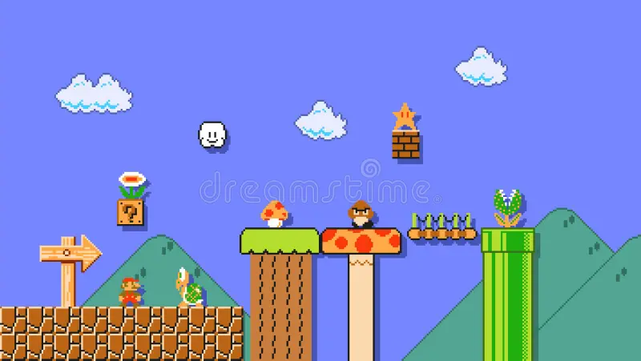
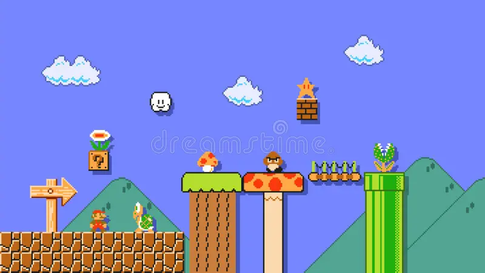

Hemos escogido 5 juegos antiguos o retro variados y que, de algún modo u otro, hayan perdurado en la memoria
de los fans o hayan sido una fuente de inspiración para otros juegos a lo largo de los años. Evidentemente, estos
no son los únicos juegos viejos que han servido como ejemplo para la industria del videojuego, pero todos ellos
tienen ese algo especial que los ha hechos distinguible y absolutamente únicos e irrepetibles.
PAC MAN
Desde sudaderas con capucha hasta loncheras, Pac-Man es una institución de juego. Es el juego arcade por excelencia y el que pienso cada
vez que hablo de viejas salas de juego.
Junto con su media naranja, Ms. Pac Man, estos íconos de los juegos
todavía obtienen un centavo en sitios de segunda mano. ¡Aparecen en innumerables títulos de lo mejor de’ e incluso han aparecido en su propia
aventura en 3D!
Sí, Pac-Man es una leyenda de buena fe. ¡Quién hubiera pensado que
algo que parece un cruce entre un símbolo matemático y una rueda de parmesano.


TETRIS
Elegimos la versión de NES de este juego porque la portada es simplemente fantástica. No es el original, que sale cinco años después de que el clásico soviético cayera por primera vez, pero el hombre es uno de los mejores.
Además, cualquier portada de juego que lleve el título 'el juego mental soviético' tiene que ser un cinturón absoluto.
Es bastante seguro decir que sin este juego de
éxito de taquillas, nunca tendríamos clásicos
como Columns o Candy Crush, o todas las otras
imitaciones que juegas en tu móvil continuamente en lugar
de hacer esas hojas de cálculo en la oficina.
Esta simple pantalla púrpura trajo tanta alegría a millones de personas en todo el mundo.¡Incluso el fondo está formado por bloques de Tetris, para gritar en voz alta!
Las melodías, la acción multijugador, el hecho de que el
púrpura puede verse bien en tantos tonos; Sí,
este es el juego de Tetris para mí, ¡y es 100% imposible de dejar!
Super Mario Bros. 3
Sin duda alguna, el plato fuerte de Super Mario Bros. 3 es el
diseño de sus mundos coloridos, con secretos por doquier
que nunca te esperas, y con sorpresas tan satisfactorias que
ha recuperado, en parte, el increíble Super Mario Odyssey.
Este Super Mario es todo un clásico atemporal que ha
tenido varias readaptaciones a consolas como la Game Boy
Advance y que logró influenciar a los desarrolladores de la industria
para crear juegos de este tipo que tuvieran un planteamiento más
dinámico y sorprendente.
Si hay algo que caracteriza a esta entrega es su enorme variedad de
mundos y niveles en los que se introducían mecánicas poco vistas y que
mejoraban la fórmula ya patentada por la marca Nintendo
 

Pokémon Oro/Plata
Sí, ya lo sabemos, Pokémon Oro/Plata es la segunda generación de
Pokémon y no la primera, pero, si nos lo permitís, estos dos juegos
consiguieron superar a sus predecesores con creces.
Además de mostrarnos una nueva región por explorar, Johto,
incluían una nueva generación Pokémon tan fascinante como
la primera, abrazó con mayor intensidad los tipos dobles y
generó dos nuevas categorías, Siniestro y Acero, que lograban detener la fuerza desbordante de las criaturas de tipo
Psíquico y equilibrar el panorama general.
También cabe mencionar que la segunda generación
Pokémon tiene una de las mejores historias de la saga, envuelta en misterio y en legendarios que han dado mucho
que hablar.
No cabe duda de que Oro y Plata conforman una de las entregas más queridas de todas, y quizás de las más recordadas de cuantas han salido.
Lo que Azul, Rojo y Amarillo crearon con amor y tesón, se perfeccionó y pulió hasta casi los cimientos en Oro y Plata, haciendo que los fascinados con Pokémon recuerden con intensidad aquellos maravillosos años. ¿Qué nos esperará en la recién anunciada octava generación Pokémon?
Street Fighter / Turbo
¿Quién no recuerda las flamantes recreativas en las que se podía jugar a este genial título de lucha a todo gas? Bueno, y si no las recuerdas, ¿a que te suena la franquicia Street Fighter? Pues esto es, básicamente, porque
Capcom dio con la combinación perfecta para enamorar
a jugadores de todo el mundo. La plantilla de luchadores era y es realmente memorable y las animaciones
en perfectos diseños y escenarios 2D eran alucinantes.
Era como estar viviendo en un manga de luchas infinitas a todo color. Este fue el juego de lucha favorito
de casi todo el mundo gamer hasta que la franquicia
Tekken comenzó a asomar la cabeza con luchadores
poligonales y que podían hacer movimientos mucho
más fluidos y naturales que los personajes del título de Capcom.
Aún así, este juego fue y es tan tremendamente popular que aún sigue congregando a un gran número de fans en torneos internacionales en los que se miden las habilidades de cada uno con el mando.